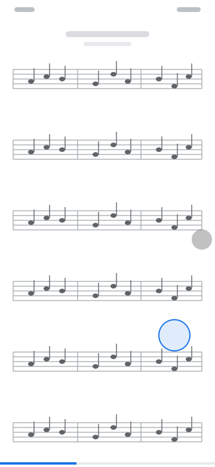
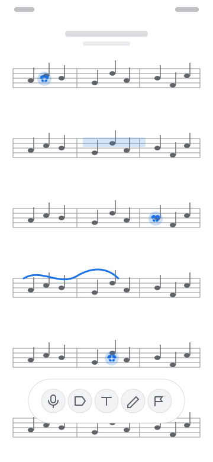
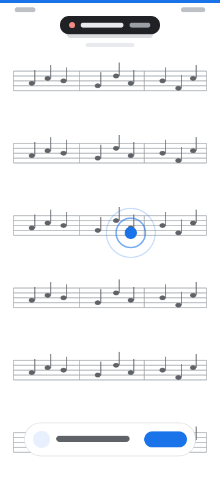
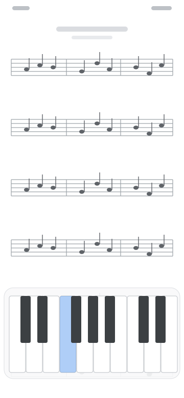
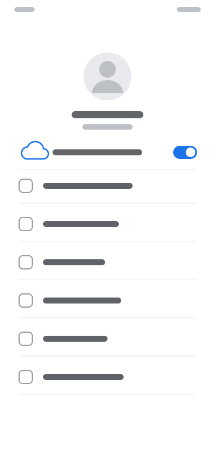
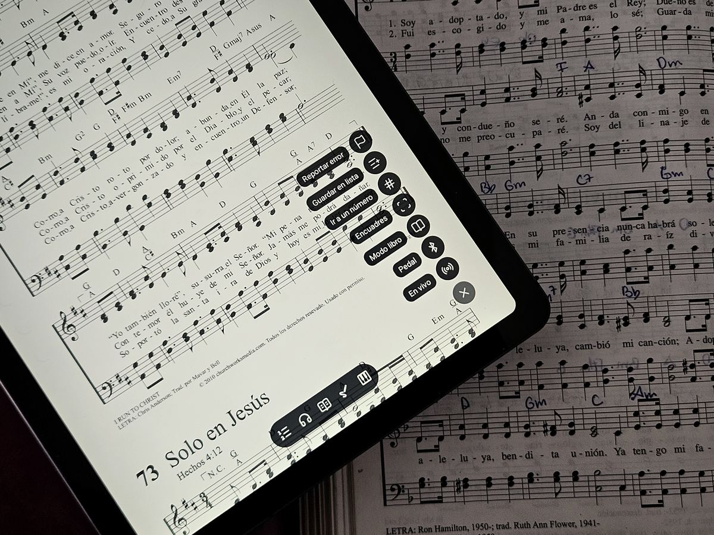
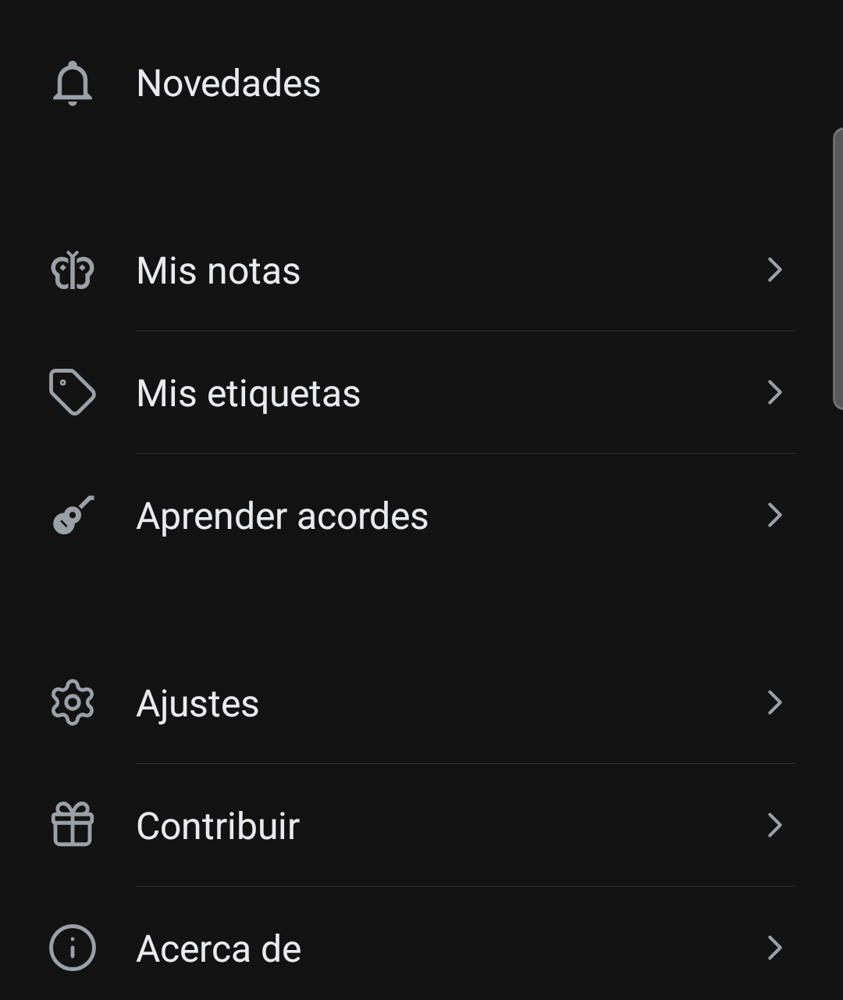
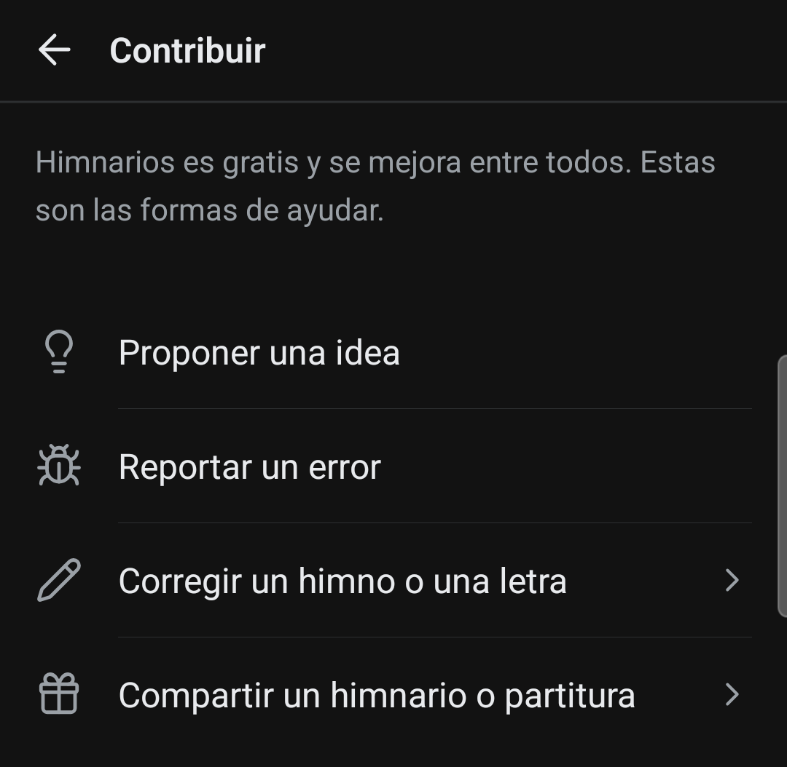
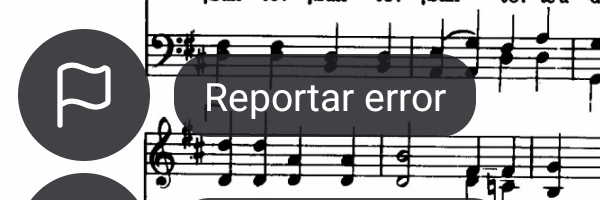

Read
Continuous scroll or book mode. Zoom with two fingers and turn the page with a tap on the edge, a keyboard or a Bluetooth pedal. Rotate the phone and you stay in the same place.


Version 2.1 · Android
The sheet music reader for playing and singing at church.
Free · No ads · Works offline
You work with the PDF scores you add. The app makes sure turning pages, zooming and taking notes never pull you out of the music.
Continuous scroll or book mode. Zoom with two fingers and turn the page with a tap on the edge, a keyboard or a Bluetooth pedal. Rotate the phone and you stay in the same place.

Press and hold a spot on the page to leave a tag, a text note or a voice note. Use the pencil and highlighter to mark what you don't want to forget. Each note shows up as a small butterfly that doesn't cover the music.


What will be played at each service, in order, for you or for your group. Move from one piece to the next without searching.


Whoever leads brings everyone to the same page and can point to a spot on the score. Everyone follows along on their own phone.


A nearly transparent keyboard on top of the page. It sounds while you touch it, and the score never shrinks.


Sign in with your Google account only if you want to back up your lists, notes and marks, share with your community or lead live. Without an account, everything else works the same.




Your lists or a single hymn, with its lyrics and the score one tap away.
When you search, a hymn for today and the community's recommendations.
Tell us whether you play, lead or sing, and the app puts what you use at hand.
A new design, a guide for your first list and a trash bin to recover what you delete.
What we are preparing. It may change while we test it.
What your community is singing and what is new, in one place.
Ideas of what to sing for each date and theme.
A gentle daily reminder. Never during the service.
A program for Windows and Linux that brings the community's lyrics to your church's screen or your stream.
Reading, annotating and building lists need no account and no internet: everything stays on your phone. No ads, and we never sell data. If you sign in with Google, the app receives only your name, your email and your profile photo, and your PDFs are never uploaded.
The Android installer will be published here soon. If you'd like to be told when it's ready, write to calebchurata@gmail.com.
Not for now. We are focusing on a single platform until we have a stable version.
To reach iOS, the development team would need what it does not have today: a Mac, an iPhone or iPad for testing, and the Apple developer subscription. If you can help with that, let us know and we will schedule a meeting.
From the app: tap your photo (Me tab), go to Contribute and choose Propose an idea. Check "An idea", write it and tap Send.

Tap your photo, in the Me tab.
Go to Contribute. Choose Propose an idea, write it and tap Send.
Choose Propose an idea, write it and tap Send.On the score, tap the center of the page to show the tools, tap the bubble on the edge and choose the flag "Report bug". Tell us what is wrong; the page is included. For other bugs: Me → Contribute → Report a bug.

Questions, bugs or ideas: calebchurata@gmail.com.